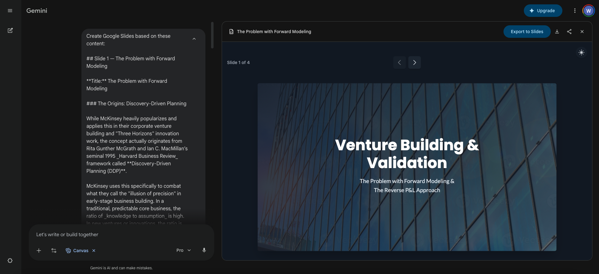
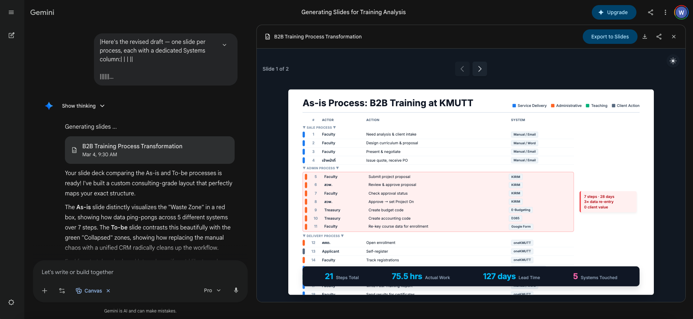

Showcase: ตัวอย่างสไลด์ที่สร้างด้วย Gemini Canvas¶
หน้านี้รวบรวมตัวอย่างสไลด์จริงที่สร้างด้วย pipeline จาก Presentation Toolkit — กลั่นเนื้อหาก่อนด้วย ChatGPT หรือ Claude แล้วป้อนเข้า Gemini Canvas
ตัวอย่างที่ 1 — สไลด์วิชาการ: Venture Building & Validation¶
บริบท: สไลด์สำหรับอธิบาย framework การทำ venture building — เนื้อหาซับซ้อน ต้องเล่าเรื่องให้ชัดก่อนออกแบบ ใช้ Claude กลั่น outline ก่อน แล้วป้อนเข้า Gemini Canvas พร้อม brand spec

สิ่งที่เกิดขึ้นในภาพ
ด้านซ้ายคือ Gemini Canvas กำลัง generate สไลด์จาก outline ที่ป้อนเข้าไป — ด้านขวาคือสไลด์ที่ออกมาทันที layout สะอาด title ชัด เนื้อหาไม่ยัด พร้อม export เป็น Google Slides ได้เลย
ตัวอย่างที่ 2 — สไลด์วิเคราะห์กระบวนการ: B2B Training at KMUTT¶
บริบท: สไลด์วิเคราะห์ As-is process ของระบบ B2B Training ที่ KMUTT — ต้องการแสดงให้เห็นว่า "Waste Zone" อยู่ตรงไหน และกระบวนการไหนบ้างที่ collapse ได้ ใช้ข้อมูลจริงจากองค์กร ป้อนผ่าน Claude ให้จัดโครงสร้าง แล้วสร้างสไลด์ใน Gemini Canvas

สิ่งที่เกิดขึ้นในภาพ
Gemini Canvas สร้างตาราง process analysis ที่ไฮไลต์ Waste Zone (แดง) และ Collapsed (เขียว) พร้อม summary metrics ด้านล่าง — 21 Apps, 75.3 ชั่วโมง Lead Time, 127 วัน, 5 ระบบที่เชื่อมกัน ข้อมูลเชิงลึกแบบนี้ได้มาจากการที่ AI ช่วยจัดโครงสร้างก่อน ไม่ใช่ให้ AI คิดเนื้อหาเอง